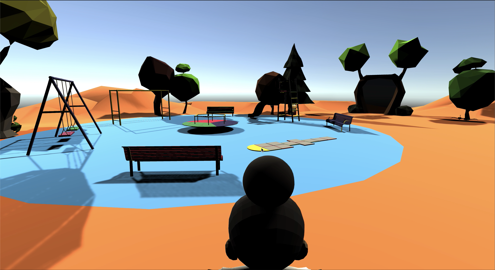

Digital Peer
Projet tutoré
2020 - 2021
Projet réalisé au cours de ma deuxième année d’école d’ingénieur, il s’agit du projet tutoré de ma formation. Contactés par une agence à Instabul, notre mission était de créer un prototype d’une plateforme pédagogique pour les enfants de 8 à 11 ans.
Mon rôle au sein de l’équipe était de développer le concept théoriquement, puis ensuite de coder la plateforme sur le logiciel Unity. J’ai également été en soutient dans la gestion de projet en tant qu’assistante cheffe de projet. Lors de la campagne de communication du projet, je me suis occupée de la rédaction des publicaitons.

